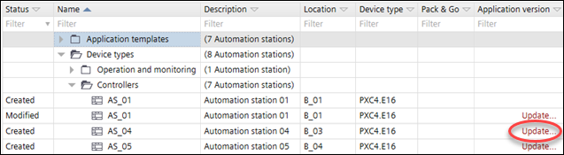
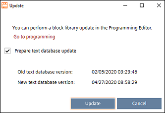

更新设备的文本数据库
设备最多包含应用程序的文本数据库和翻译。四种语言。
Object naming
该数据库是在首次工程期间或在定义或更改所需的运行时语言时创建的。Settings > Localization.
Localization
默认情况下，只要运行时语言设置保持不变，将配置下载到设备时，设备上的文本数据库就保持不变。
为了更新主要工厂自动化站上的文本数据库，用户需要强制更新文本数据库。
Update the text database of primary plant automation stations
- A newer text database is available in the ABT Site installation.
- Go to Building.
- Open the Application & device overview task.
- Click Check for updates.
- The system checks for new versions of application templates, graphics libraries and text databases. If a new version is found, Update displays in the Version column of the list.

- Click Update for each item you want to update.
- A message displays the dates of the text database on the device and in the local ABT Site installation.

- Select Prepare text database update.
- Click Update.
- The text database is updated.
对于基于应用程序类型的设备，各种语言的文本是应用程序模板的一部分。文本的更新只能通过应用程序模板的更新来实现。
Update application templates
- A newer version of the ABT Site library has been installed.
- Go to Building.
- Open the Application & device overview task.
- Click Check for updates.
- The system checks for new versions of all application templates and graphics libraries. If a new version is found, Update displays in the Version column of the list.

- Click Update for each item you want to update.
- A message displays details about the update, e.g. the type version numbers. An info might display telling you that a firmware update is required.
- For operating and monitoring devices select Library content update.
- Select the new version from the New type version drop-down list.
- Click Update.
- The application templates or graphics are updated to the selected library version.